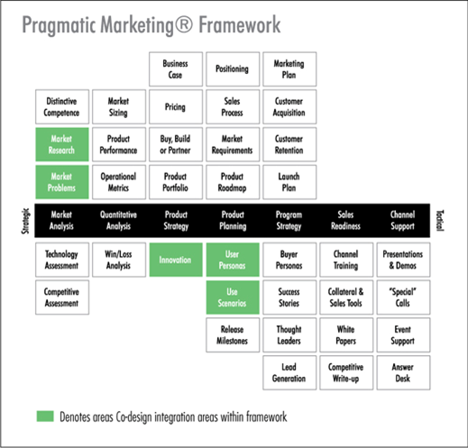

The first step to effective market research is to gather field data from users in their daily context. Techniques used to understand user goals and tasks include:
1. Interviews
2. User observation
3. User surveys

While gathering data, it is important to consider these questions for a compelling analysis:
1. What information is most relevant?
2. What are the environmental conditions like?
3. Are there environmental constraints?
4. What is missing?
5. What should be automated vs. manual?
Conducting market research on user input has two benefits:
1. Discovering potential product opportunities
2. Decreasing time and money waste
The contextual knowledge gathered from user research is then used to create
1. User personas
2. Scenarios
3. Effective design solutions
Post Release
Once the product is developed and released in the market, it is still important to conduct market research to gauge user input. Some ways to gather user input include:
1. Create mechanisms to monitor what users think of the product
2. Build an online community for users to share ideas with other users
Post release research paves the way for future improvements, as users openly discuss popular features, indicate their preferences, or shed insight on unintended uses of the product. In the end, the best way to maintain the lifecycle of the product is to know and deliver what the user ultimately wants.